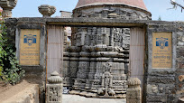
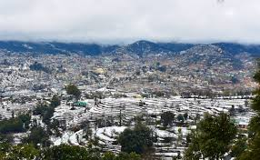
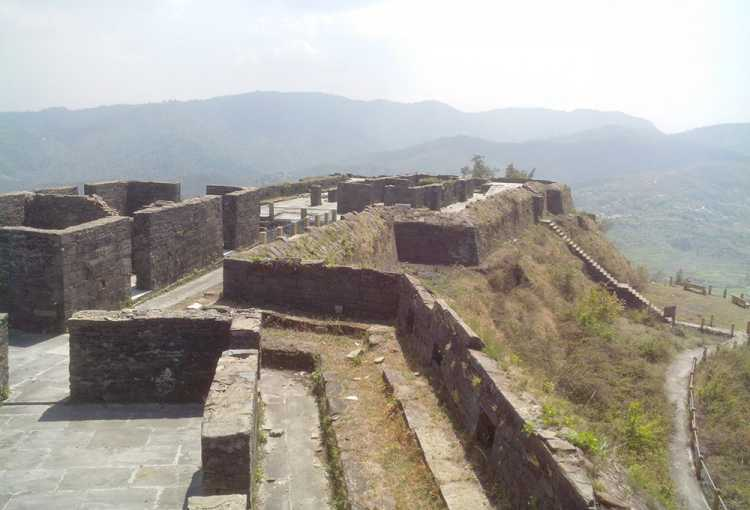
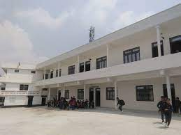
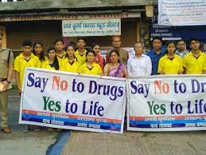

Copyright @2023 All rights reserved | Made with by Komal nariyal
Champawat (Kumaoni: Champāvat) is a town and a Nagar Palika Parishad in Champawat district in the state of Uttarakhand, India. It is the administrative headquarters of Champawat district. The town was the former capital of the Kumaon Kingdom.
Champawat is believed to be the place where the Kurmavtar (the turtle incarnation of Lord Vishnu) took place. These days there is a temple called Kranteshwar Mandir, which is dedicated to lord Shiva. It is also believed that the head of Ghatotkacha (son of Bhima and the Rakshasi Hidimbi ) fell here after he died in the battle of Mahabharata. The Gahtku Mandir is the temple dedicated to Ghatotkacha. There is a famous temple called the Shani Mandir (or Manokamna Purn Mandir Kaula) in the village of Maurari
The original name of Champawat is said to be Champavati, which was due to its location on the banks of the Champavati stream. To the west of this region was a fort called Donkot, where the local Rawat kings resided. There are seven ancient temples in the valley of the Champavati stream: Baleshwar, Kranteshwar, Tadkeshwar, Rishneshwar, Dikteshwar, Mallareshwar and Maneshwar, of which, the Baleshwar temple is considered to be the most important. According to a local epic titled Gurupaduka, Champavati, the sister of the Nagas, did penance near the Baleshwar temple of Champawat. In her memory, the temple of Champavati is still located inside the Baleshwar temple complex. According to the Vayu Purana, Champavati was the capital of nine kings of Puri Naga Dynasty.[2]
Champawat lies in the southeast of the North Indian state of Uttarakhand. It is in the eastern part of the Kumaon Himalayas at an average elevation of 1,615 metres (5,299 ft).[3] It is located at 29.33°N 80.10°E[4] and covers an area of 5 square kilometres (1.9 sq mi). The city of Champawat lies in the Champawat district of Uttarakhand, which was carved out from the Pithoragarh district by the Government of Uttar Pradesh in 1997.[5][6]
Champawat has a Humid subtropical climate (Köppen climate classification Cfa) with distinct wet and dry seasons.[7] Due to its high elevation, Champawat usually enjoys a more moderate climate throughout the year. The average temperature for the year in Champawat is 24.6 °C (76.3 °F).[7] The warmest month, on average, is June with an average temperature of 32.1 °C (89.8 °F).[7] The coolest month on average is January, with an average temperature of 14.3 °C (57.7 °F).[7] The average amount of precipitation for the year in Champawat is 1,239.5 millimetres (48.80 in).[7] The month with the most precipitation on average is July with 358.1 millimetres (14.10 in) of precipitation.[7] The month with the least precipitation on average is November with an average of 2.5 millimetres (0.098 in).[7] There are an average of 43.8 days of precipitation, with the most precipitation occurring in August with 10.9 days and the least precipitation occurring in November with 0.6 days.[7]
Due to its cooler temperatures Champawat is a popular conduit for tourists visiting Pithoragarh, Dharchula, Almora and other mountain towns. The long winding sealed roads leading up to Champawat through Tanakpur are a popular route for motorcycle enthusiasts. Champawat has multiple hotels and guesthouses for individuals visiting the town. Bal Mithai of Champawat is famous for its unique taste. According to www.India.com, Champawat was ranked among ten most peaceful places in India. Many other non governmental organisations also ranked Champawat among ten most peaceful places in India
Champawat had a population of 4801 in 2011[9] within its administrative limits on a land area of 5 km2 (1.9 sq mi), 21.3% up from 3958 in 2001.[12] Out of the total Population, 2,543 are males while 2,258 are females as per report released by Census India 2011.[13][9][11] Population of Children with age of 0–6 is 554 which is 11.54% of total population of Champawat.[11][13] In Champawat, Female Sex Ratio is of 888 against state average of 963.[11][13] Moreover, Child Sex Ratio in Champawat is around 748 compared to Uttarakhand state average of 890.[11][13] Literacy rate of Champawat city is 91.69% higher than state average of 78.82%.[11][13] The Male literacy is around 95.91% while female literacy rate is 87.04%.[11][13] Schedule Caste constitutes 18.60% while Schedule Tribe were 0.94% of total population in Champawat.[11][13] Out of total population, 1,356 were engaged in work or business activity.[11] Of this 1,103 were males while 253 were females.[11][13] Of total 1356 working population, 95.28% were engaged in Main Work while 4.72% of total workers were engaged in Marginal Work.[11][13]
Champawat lies on the National Highway 9. The highway running from Malout in Punjab to Askot in uttarakhand connects Champawat with Delhi, Rudrapur, Tanakpur and Pithoragarh.[14] As of 2011, the town has a small road network of 20 kilometres (12 mi),[9] maintained by the municipal board. Popular modes of transport are shared taxis and buses run by Uttarakhand Transport Corporation and Kumaon Motor Owners Union, which connect Champawat to Delhi and other major cities in the state of Uttarakhand, such as Dehradun, Tanakpur, Haldwani, Pithoragarh, Almora and Rudrapur. The Champawat Bus Station, located in Shant Bazar locality of the town, was inaugurated on 27 Jan 2019.[15] The Naini Saini Airport in Pithoragarh, located at a distance of 80 kilometres (50 mi) from the town is the nearest Airport, that connects it with Dehradun. The Pantnagar Airport, located at a distance of 170 kilometres (110 mi), provides air connectivity with Delhi. The nearest railhead is at Tanakpur, at a distance of 70 kilometres (43 mi), which has direct rail connections with major cities of India including Delhi, Agra, Lucknow and Kolkata.
As of 2011, there are eight primary schools, three middle schools, two secondary schools, two senior secondary schools / Inter colleges and one degree College in the town.[9] The Govt. P.G. College, Champawat - the only degree college in the town was established in 1996, and was previously affiliated to Kumaun University, Nainital.[16] The college, along with all other degree colleges of Champawat district got affiliated to Soban Singh Jeena University, Almora, when it was founded in 2020.[17]
 Copyright @2023 All rights reserved | Made with by Komal nariyal